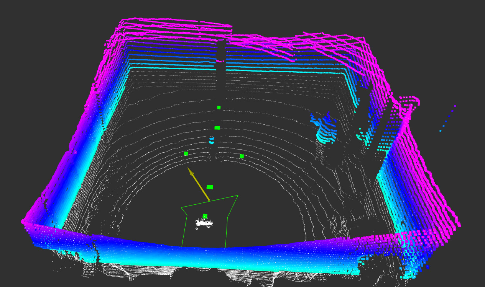

The Algorithm

- The algorithm takes a list of target waypoints in order and a costmap of the area as inputs.
- First the linear path between each waypoint and the next is searched for costs higher than a specific threshold.
- The first and last coordinates along the path above the threshold are marked as the front and back edges of the obsticle.
- Starting from the midpoint of these edges, the map is searched in a perpendicular line for a third point on the bondary of the obsticle.
- Specifying the direction of this search allows the algorithm to always create turns in the same direction.
- Once the third point is found, the midpoint between it and each initial edge is calculated.
- From these midpoints, the map is searched in a perpendicular line to find more points on the edge of the obsticle.
- This process is repeated recursively until the found point is close to the midpoint where there search started.
- This method allows the algorithm to follow the edge of complex obsticles, without having to calculate the overall shape of the obsticle.
Snowplow Implementation
- Algorithm was implemented in OTTO, CWRU's 1st place robot in the 2025 Ion Autonomous snowplow competition.
- This minimized OTTO's deviation from its predetermined plowing strategy and allowed it to clear more than 95% of the snow from the competition area.
- Solved an issue observed with cost minimazation algorithms where the robot would gradually move around the obsticle, minimizing distance traveled but leaving a section of uncleared snow.